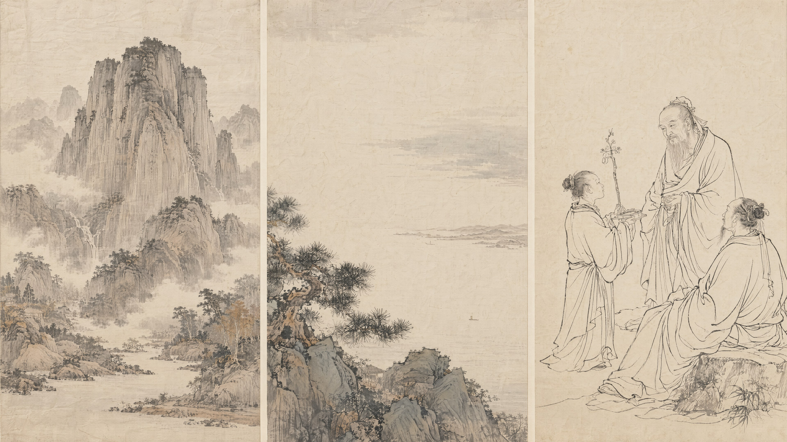
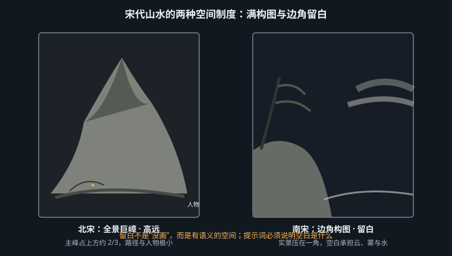
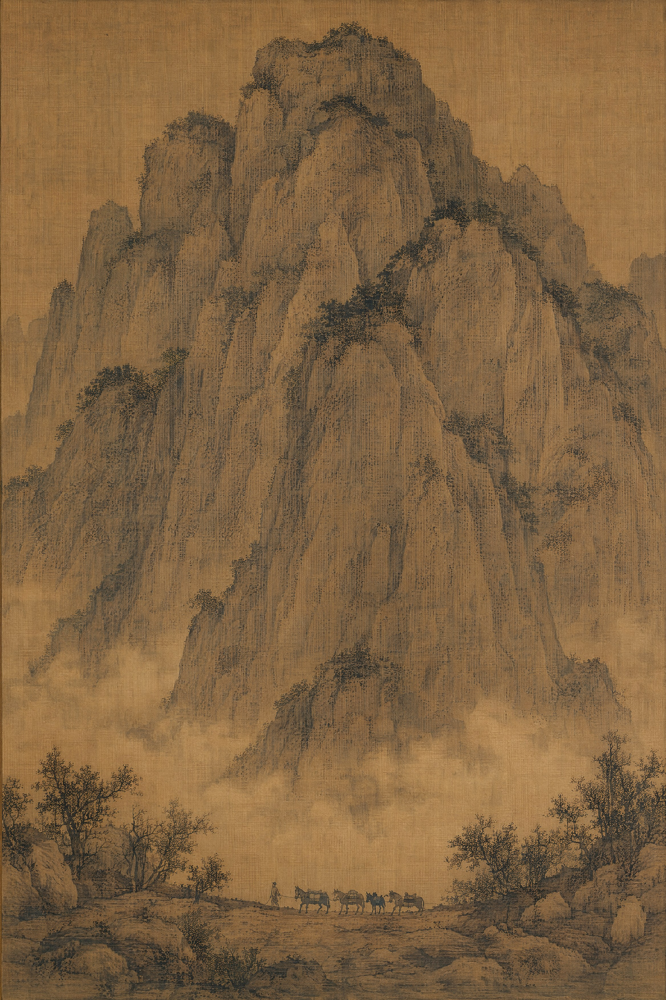
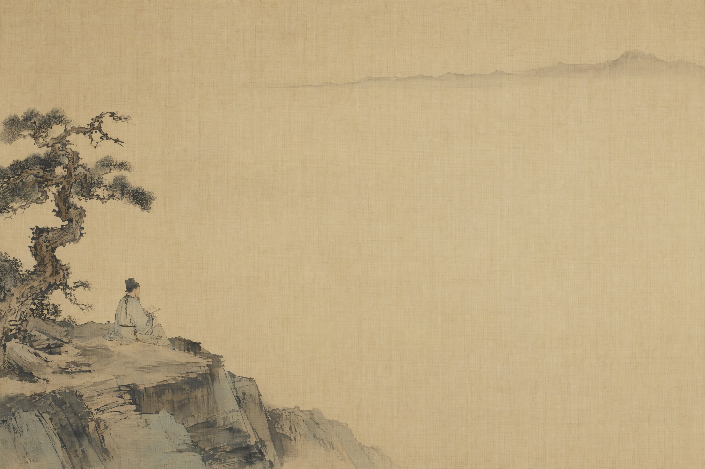
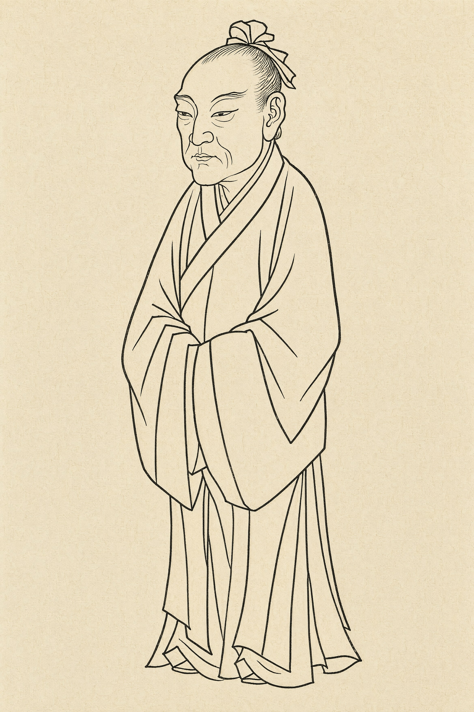

为什么写 chinese ink painting 得到的永远不是宋画——指称的分辨率决定结果的分辨率

第 1 章立了一条规矩：物理层用描述，文化层用指称。从本篇开始的八章都是文化层，但很快你会发现，"指称"这件事本身也有精度问题。
把 chinese painting 写进提示词，你指向的是训练集里一个极其庞大的图像集群。这个集群的统计重心不在宋画——它在当代国风商业插画：浓丽设色、工笔美人、描金勾线、祥云缠枝纹、偶尔加一点赛博。原因很朴素：这类图在互联网上的数量比宋代绢本的高清扫描件多几个数量级，而且带着大量中文与英文标注。你指称了一个名字，模型给你的是这个名字下的众数。
所以整个 PART 04 反复要用到同一个动作：用限定词把泛称的分布收窄。不是删掉 Chinese（删了模型会失去大方向），而是给它套上三层夹子：
Northern Song / Southern Song / Ming dynasty，以及hanging scroll、handscroll 这类形制词——形制自带观看方式。ink and light color on silk / on paper。这一项被严重低估，下文单独讲。郭熙（约 1000–约 1090）在《林泉高致》里给出的这段话，是中国画论里最可直接执行的一段：
"山有三远：自山下而仰山巅，谓之高远；自山前而窥山后，谓之深远；自近山而望远山，谓之平远。"他还接着说了三者的色与势："高远之色清明，深远之色重晦，平远之色有明有晦；高远之势突兀，深远之意重叠，平远之意冲融而缥缥缈缈。"
注意后半段的价值：郭熙把视点和调子绑在了一起。这正是提示词需要的结构——机位 + 影调，两条都能写。
| 三远 | 机位 | 郭熙给的调子 | 提示词写法 |
|---|---|---|---|
| 高远 | 山下仰视山顶 | 色清明、势突兀 | looking up at a towering peak that fills the upper two-thirds, high contrast crisp silhouette |
| 深远 | 从前山窥后山 | 色重晦、意重叠 | looking past a near ridge into layered receding ranges, dark and dense, veiled in mist |
| 平远 | 由近山望远山 | 有明有晦、缥缈 | low horizon, wide calm expanse, far ranges fading into pale wash |
三者可以在一张画里并存（这本身就是散点透视的表现），但提示词里只该主打一个。同时写三条，模型会做平均，结果是一张没有空间态度的普通山景。
皴法最容易被当成"装饰性笔触"，其实它是地质写实——不同的皴对应不同的岩性和风化状态。理解这一点，你才知道该给哪种山配哪种皴，也才知道怎么用物理语言把它描述出来。
| 皴法 | 笔触形态 | 对应地貌 | 英文描述 |
|---|---|---|---|
| 披麻皴 | 长而松的平行弧线，如披散麻纤维 | 江南土质丘陵，植被覆盖的圆浑山体 | long loose parallel hemp-fiber strokes, rounded earthen hills |
| 雨点皴 | 密集短促的点戳，成片堆叠 | 关陕风化砂岩，粗粝厚重的正面岩壁 | dense short raindrop stipple strokes, gritty weathered rock face |
| 斧劈皴 | 侧锋横扫，一笔即一个面，边缘斩截 | 受节理切割的坚硬岩体，方硬块面 | broad side-brush axe-cut slabs, sharp faceted hard rock |
| 卷云皴 | 蜷曲回转如云头 | 郭熙式的蟹爪树与蠕动山石 | curling swirling cloud-scroll contours in the rock |
范宽《溪山行旅图》（台北故宫博物院藏）的主峰就是雨点皴大面积堆出来的；郭熙《早春图》（1072 年纪年）是卷云皴；斧劈皴由李唐推出，到马远、夏圭手上变成主力语言。
写西方流派时，人名是极强的杠杆（Caravaggio 一个词能定住整套光照）。但中国古代画家的名字在多数模型里是弱信号——同样是数字化图像基数的问题：卡拉瓦乔的高清图在训练集里可能有几十万张各种衍生品，范宽只有一张画的若干个扫描版本。
结论：写宋画时，Fan Kuan 大概率只贡献"中国、古代、山水"三个模糊维度，真正干活的是 Northern Song + raindrop stipple strokes + on aged silk。人名可以留着当保险，但不要指望它。
宋画的空白不是"没画完"，也不是现代平面设计意义上的负空间。它有明确的物理身份：云、雾、水面、天。这个区别在提示词里是致命的——如果你写 negative space 或 minimal empty space，模型会调用平面设计的分布，倾向给你一块干净的纯色底；而宋画的空白是被周围的物象逼出来的，边缘有渐隐的墨气。
正确写法是给空白派身份：
the unpainted areas read as drifting mist and open water, soft ink edges dissolving into the bare silk, not flat background — atmosphere
这是本章效率最高的两句话，而且它们属于物理层，因此比任何风格词都稳。
宋画不设单一光源，山石的体积靠皴笔密度和墨色浓淡（所谓"墨分五色"：焦、浓、重、淡、清）建立，没有投影，没有明暗交界线，没有高光。而模型的默认渲染倾向是写实照片式的——你不否定，它就给你打一道侧光，再刷一层水墨滤镜上去。
no cast shadows, no single light source, no chiaroscuro modeling, volume built by stroke density and ink tonality only
灭点同理，见第六节。
这是本章对提示词最关键的一次分叉。两宋山水是两套构图哲学，你不选，模型就给你一个折中物——通常是满构图但没有巨嶂的压迫感，也没有边角的空灵，即"什么都像一点"的中式山水。
| 北宋（约 960–1127） | 南宋（1127–1279） | |
|---|---|---|
| 构图 | 全景巨嶂，主峰居中，占画面上部三分之二 | 边角构图，实景压在一角，"马一角、夏半边" |
| 观者位置 | 被安置在山脚仰望，人被压得极小 | 被安置在与近景平齐处，像同游者 |
| 密度 | 满，几乎不留大块空白 | 大量留白，常占一半以上 |
| 情绪 | 纪念碑式，崇高、不可接近 | 抒情，诗意，可亲 |
| 典型皴 | 雨点皴、卷云皴 | 大斧劈皴（湿笔横扫） |
| 代表 | 范宽《溪山行旅图》、郭熙《早春图》 | 马远、夏圭 |
| 关键提示词 | monumental centralized peak, filled composition | one-corner composition, three quarters left unpainted |
顺带一提，《溪山行旅图》里那队几乎看不见的驮马是整张画的比例基准——把一个"小到需要找"的人物放进画面，是让山产生尺度感最有效的手段。这条经验可以直接迁移到任何巨物场景。

a monumental mountain peak filling the upper two-thirds of the frame, a tiny mule caravan on a path at the very bottom edge, small enough to search for, dense short raindrop stipple strokes covering the rock face, scrubby dark texture dots for distant foliage, flat ambient light, no cast shadows, no single light source, no chiaroscuro, volume from stroke density and ink tonality only, ink and light color on aged silk, warm ochre-brown silk patina, five-tone ink gradation, Northern Song dynasty monumental landscape, hanging scroll, frontal view looking up at the peak, no perspective vanishing point, vertical composition, mist band separating foreground from the peak
模型：MJ v8.1 · --ar 2:3 · 无负面词

| 片段 | 它在管什么 |
|---|---|
filling the upper two-thirds | 直接量化"巨嶂"。不给比例，模型会把主峰缩到画面中部，得到普通风景 |
small enough to search for | 建立尺度。比 tiny figures 更狠，逼模型压缩人物占比 |
raindrop stipple strokes | 皴法的物理翻译，把岩面质感从"渐变灰"推向"点的堆积" |
no cast shadows / no vanishing point | 两条否定，切断默认写实渲染管线（详见第六节） |
aged silk, warm ochre-brown patina | 本条里最抗"现代国风"的一句，见下方警告框 |
mist band | 宋画用云气分割前中后景，替代空气透视的渐变 |
宋代绢本历经数百年，胶矾与丝素老化，底色是暖褐、赭黄，还常有绢丝的横竖织纹和局部霉斑。当代国风插画则几乎都在纯白数码底上作业。
这意味着 aged silk ground, warm ochre-brown patina, visible silk weave 这一句是一个非常廉价的强分类器：它一下子把结果推离"现代插画"分布，因为现代国风图里根本没有这种底色。写宋画不写绢，等于放弃了一半优势。
如果你要的是纸本（明代文人画、白描、版画更多用纸），则写 on cream laid paper, slightly absorbent, faint fiber texture——两者不要混写。
a gnarled pine and a single scholar seated on a rock, occupying only the lower-left corner of the frame, the remaining three quarters left unpainted, reading as open water and mist, wet broad side-brush axe-cut slabs on the rock, sharp faceted edges, one pale grey wash line for the far shore near the upper right, no cast shadows, no chiaroscuro, flat ambient light, ink and light color on aged silk, restrained palette, almost monochrome, Southern Song dynasty one-corner composition, lyrical intimate mode, diagonal recession, no vanishing point, shifting viewpoint, horizontal composition, extreme emptiness
模型：MJ v8.1 · --ar 3:2 · 无负面词
这条的成败几乎全在 the remaining three quarters left unpainted 和 extreme emptiness 上。模型有强烈的填充倾向（训练集里的构图重心是"画满"），如果只写 minimalist composition，它会理解成"元素少但仍然铺满画面"。你必须用分数量化空白比例，并给空白派身份（reading as open water and mist），否则要么被填满，要么变成一块死白。

山水之外，中国传统给 AIGC 的第二份遗产是纯线的造型体系。这套体系的特殊性在于：它完全放弃了明暗建模，只靠线的粗细、速度、起收、转折来表达体积、材质和性格。这在今天的价值很直接——纯线图是最容易被下游使用的一类图（可矢量化、可上色、可做 UI 与包装）。
白描是只用墨线、不设色（或仅极淡）的独立画科，北宋李公麟确立其地位，明代大量进入插图与版画。明人（如邹德中《绘事指蒙》）把历代衣纹线型总结为"十八描"。不必全记，抓住线的质量差异即可，这几种最有辨识度：
| 描法 | 线的物理特征 | 气质 | 英文写法 |
|---|---|---|---|
| 高古游丝描 | 极细，粗细几乎不变，行笔匀速，无顿挫 | 古雅、飘逸、静 | hairline contour of perfectly even width, gossamer thread, no pressure variation |
| 铁线描 | 匀而挺劲，转折处出硬角 | 刚正、庄严 | even taut iron-wire outline, angular corners at folds |
| 钉头鼠尾描 | 起笔按下成钉头，行笔渐提，收笔尖细 | 顿挫、有动势 | strokes entering with a heavy blunt head and tapering to a fine tail |
| 减笔描 | 笔数极少，大幅概括 | 放逸、写意 | extreme economy, the whole figure in a handful of strokes |
把描法名当提示词写没有意义（模型不认），但右列那种"起收压力"的描述是有效的——因为它描述的是可见的线形，属于可退回物理层的部分。这与皴法是同一个策略。
陈洪绶（1598–1652）是明末最值得指称的人物画家。他的关键不是"画得像"，而是有意的古拙变形：人物比例反常（头部偏大、躯干短拙或异常拉长），衣纹用高古游丝或铁线一路匀速勾出，与夸张的形体形成张力；造型被后人形容为"高古奇骇"。他为酒牌绘制的《水浒叶子》《博古叶子》经刻工上版，是明末版画的高峰之一。
提示词里要把"变形"和"画不准"区分开——只写 distorted proportions 模型会给你解剖错误。要写清变形的方向和幅度：
deliberate archaic distortion: enlarged head, compressed torso, stiff angular drapery folds that ignore the body underneath, the line quality remains calm and even — the distortion is in the shape, not in the drawing
明末徽派刻工把画稿转译成木版（胡正言《十竹斋书画谱》用饾版套印与拱花，是这套工艺的技术顶点）。木刻的线与毛笔的线在物理上不同：刻刀的起收更斩截，弧线略带硬折，粗细的连续变化被简化成几段，且线与线之间必须留出可刻的余地，所以密度上限低于毛笔。
因此 brush-drawn 和 woodblock printed 是两个必须二选一的结果：
| 毛笔白描 | 木刻版画 | |
|---|---|---|
| 提示词 | brush-drawn ink outline, fluid tapering strokes | woodblock printed line, carved crisp entries and exits, simplified thickness |
| 附带效果 | 墨色有浓淡、有飞白 | 纯黑实线、偶有断线与压印痕、纸面微不平 |
a standing figure in a long robe, three-quarter view, hands hidden in the sleeves, completely bare ground, no background scenery, no props, pure outline drawing — no shading, no hatching, no cast shadow, no tonal modeling, even taut iron-wire contour, stiff angular drapery folds falling in long parallel runs, deliberate archaic distortion: enlarged head, compressed torso, Ming dynasty baimiao ink outline, woodblock printed card, carved line quality: crisp entries and exits, simplified thickness variation, solid black ink on cream laid paper, faint paper fiber texture, flat frontal presentation, no perspective, single figure centered, vertical composition with generous margin
模型：FLUX.2 · 竖幅 2:3 · 采样步数按默认
这条对 no shading, no hatching, no tonal modeling 三连否定的依赖很重。模型的默认人物画倾向是加体积——只写 line art 往往得到"线稿 + 淡灰调子"，那是当代插画的线稿习惯，不是白描。三个否定各堵一条路：no shading 堵渐变，no hatching 堵排线（这是欧洲铜版画的语言，不是中国的），no tonal modeling 堵整体的明暗关系。

常见的误解是"中国画不懂透视"。准确的说法是：它不采用单一固定视点。手卷这种媒介本身就是边卷边看的，观者的位置随展开而移动；即使是立轴，画家也会在同一张画里并用高远与平远。物象的排列靠上下叠压表示远近，而不靠向一点收敛。
为什么这条必须显式写进提示词？因为模型学到的空间先验，其绝对主力是单点透视的照片和写实绘画。你给它一个"中式水墨"的风格标签，它多半的做法是：先按透视管线搭一个有灭点的三维场景，再在表面刷一层水墨质感。这就是"国风滤镜感"的技术成因——结构是西方的，皮是中国的。
no perspective vanishing point, no converging orthogonals, shifting viewpoint, stacked recession — nearer forms simply sit lower in the frame, objects do not diminish toward a single point
更省力的替代方案是指称形制：handscroll（横向长卷）或 hanging scroll（立轴）。形制词自带观看方式，而且它是名词，在多数模型里比一串否定句更稳。理想做法是两者叠用：形制词定大方向，否定句做兜底。
本篇每章都会有这么一张表。它比任何风格词表都值钱——因为知道模型会往哪偏，等于知道该往哪掰。
| 你写的 | 你实际得到的 | 成因 | 绕过 |
|---|---|---|---|
chinese style / oriental art | 当代国风商稿：浓丽设色、描金、汉服美人、红灯笼、祥云纹 | 该标签下的图像众数就是它 | 删掉泛称，改用"朝代 + 载体 + 技法"三件套；Chinese 只作为 Song dynasty Chinese landscape 里的被限定项出现 |
ink wash painting | 大写意：泼墨、粗放、少量浓墨块，或干脆是现代水墨 | 近现代水墨的数字图像远多于宋画 | 加 meticulous texture strokes, built up in many small strokes，并否定 no splashed ink, no bold gestural blots |
| 任何山水提示词 | 自动加了侧光和投影 | 默认写实渲染先验 | no cast shadows, no single light source, no chiaroscuro |
| 任何场景提示词 | 规整的一点/两点透视 | 同上 | no vanishing point, shifting viewpoint + 形制词 |
minimalist / negative space | 空白被填满，或变成干净的纯白背景板 | 填充倾向 + "负空间"属于平面设计分布 | 量化比例（three quarters unpainted）+ 给空白派身份（reads as mist and water） |
line art | 线稿 + 一层淡灰调子，或欧洲式排线 | 当代插画线稿习惯 / 铜版画语言 | no shading, no hatching, no tonal modeling 三连否定 |
| 宋画提示词但没写载体 | 纯白数码底，一眼当代 | 没有给底色约束 | on aged silk, warm ochre-brown patina, visible silk weave |
写完提示词，逐条核对，缺哪条补哪条：
no cast shadows, no chiaroscuro。no vanishing point + 形制词。六条里最常被漏掉、而收益最大的是第 2 条和第 5 条。